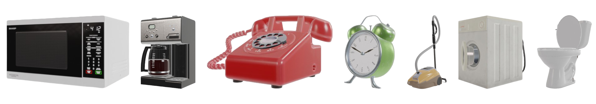
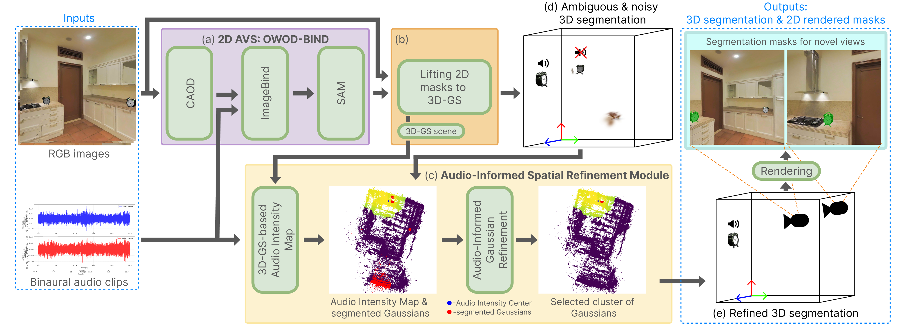
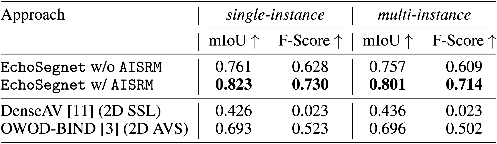

A microwave is beeping to indicate it has finished.
3DAVS-S34-O7 Dataset
Our proposed dataset is profoundly motivated towards simulating real-world indoor scenes, in terms of the visual quality of the scenes as well as the spatial acoustic response generated by the objects placed within it. The dataset is divided into two subsets: single-instance and a more challenging multi-instance. In the multi-instance subset, several instances of the sounding object are present, but only one instance is emitting sound. In total, we present 34 scenes across 7 sound-emitting object categories.
Two phones are in the room, and one of them is ringing.
To record a scene observation, we load a sampled scene from the Habitat-Matterport3D dataset into the SoundSpaces 2.0. Next, we place a semantically relevant sounding object (for instance, bathroom↔washing machine, kitchen↔microwave, living room↔vacuum cleaner, etc.) which emits a sound based on a mono audio. We capture 120 frames at a rate of one frame per second, symbolizing different positions along the moving agent's path.

Commonly found indoor sound-emitting objects featured in our 3DAVS-S34-O7 dataset.
Method

Overview of our proposed EchoSegnet: (a) 2D Audio-Visual Segmentation pipeline OWOD-BIND generates 2D masks. (b) These masks are lifted into a 3D Gaussian Splatting scene representation using SAGD with a modified voting strategy. (d) The initial 3D segmentation may contain noise and ambiguities, as spatial relationships between objects and sound were not considered. (c) To address this, we apply the novel Audio-Informed Spatial Refinement Module (AISRM). (e) In the refined 3D segmentation, only the sound-emitting object instance is retained, and noise is filtered out.
Results

Performance comparison of EchoSegnet (3D AVS) with and without Audio-Informed Spatial Refinement Module (AISRM), and comparison against 2D AVS and Sound Source Localisation pipelines on both subsets of the 3DAVS-S34-O7 benchmark.

Left: (Scene a) Qualitative comparison of EchoSegnet performance with and without Audio-Informed Spatial Refinement Module (AISRM), illustrated through projected 3D Gaussian Splatting scene representation and renderings. Right: Comparison between DenseAV (SSL), OWOD-BIND (2D AVS) and EchoSegnet. (Scene b) OWOD-BIND incorrectly segments the non-sound-emitting coffee machine. (Scene c) Both SSL and 2D AVS fail to handle a complex scenario where only a small part of the sound-emitting telephone is present in the view, whereas EchoSegnet successfully addresses this challenge.